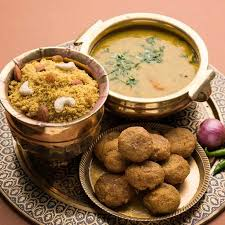
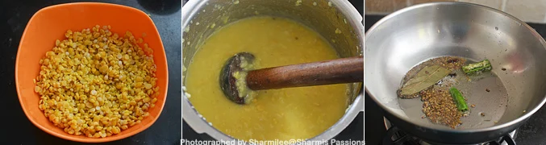
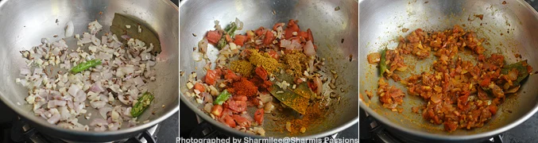
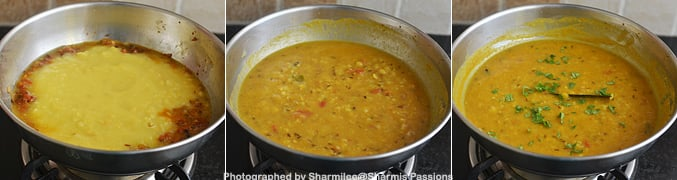
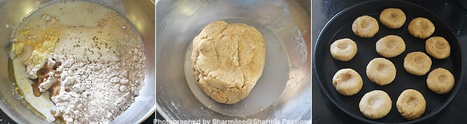
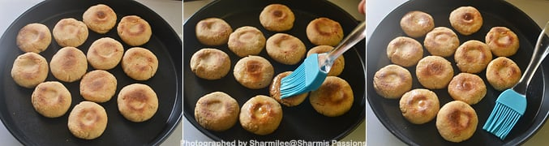
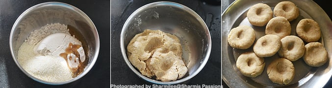
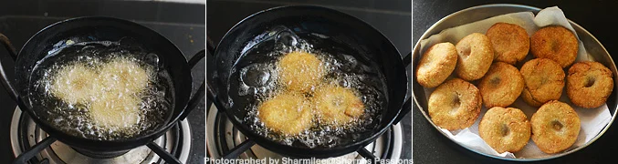
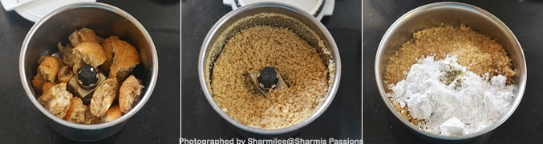
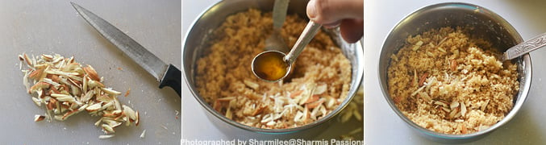

Back to Home
Back to Home
Dal Bati Churma is a tasty Rajasthani meal made up of three components, namely Dal, Bati, and Churma. Dal is lentils, bati is baked wheat ball, and churma is powdered sweetened cereal. Churma is mostly served with dal and bati and it is usually coarsely powdered wheat cooked with ghee and sugar. Traditionally, they are made by using up leftover chapatti by crushing and cooked with ghee and sugar.
This recipe is a traditional dish from Rajasthan. This recipe is prepared during festivals like Makar Sankranti, Diwali or on auspicious days like weddings. This recipe has a history which according to the historian is believed that bati originated from the soldiers who would break the dough and bury it under thin layers of sand to bake them under the sun. Later when they returned from their days' work, they found that the dough would have been baked and done and they would accompany with ghee. Later as time evolved, people started accompanying bati with dal and churma. It is to be believed that churma was discovered after a cook accidentally poured sugarcane juice over bati during wartime.
1..Rinse the dals well and pressure cook for 5 whistles along with a pinch of turmeric powder, salt and 3 cups of water. Once pressure releases, mash it well with a laddle and set aside. In a pan heat ghee - add the items listed under 'to temper' and let it splutter.
2.Add chopped onion, garlic and sauté till onions turn transparent. Then add tomatoes along with red chili, turmeric, coriander and garam masala powders along with salt(adjust as we have already added in dal). Sauté for few minutes until raw smell of tomatoes leave.
3.Now add mashed dal and mix well. Let the dal boil for 5 minutes, add little water if its too thick. Finally garnish with coriander leaves and switch off.
1.In a mixing bowl - take all the ingredients listed under 'for bati', mix well and knead it together to form a stiff dough. Divide the dough into small balls and flatten them using your palms. Make a small indentation in the center of the baatis using your thumb. Arrange them in a baking tray.
2.Preheat oven at 180 deg C for 10 minutes and bake in preheated oven for at least 25-30 minutes or until the top turns golden. When it is still hot, brush with ghee.
1.In a mixing bowl -take wheat flour, rava and ghee, add water to form a stiff dough. Make patties with your palms with a indentation at the center.
2.Heat oil (you can use ghee too) and deep fry the patties in hot oil till golden brown. Turn over and cook for even cooking, cook in low medium flame. Drain in tissue paper and set aside to cool down.
3..Once it is completely cool, break them into small pieces and grind it using a mixer. Grind it a little coarse. I did it in batches as I used my small mixie jar. Collect the mixture in a bowl, add powdered sugar and cardamom powder and mix well.
4.Chop almonds lengthwise add it along with ghee and give a quick mix.
